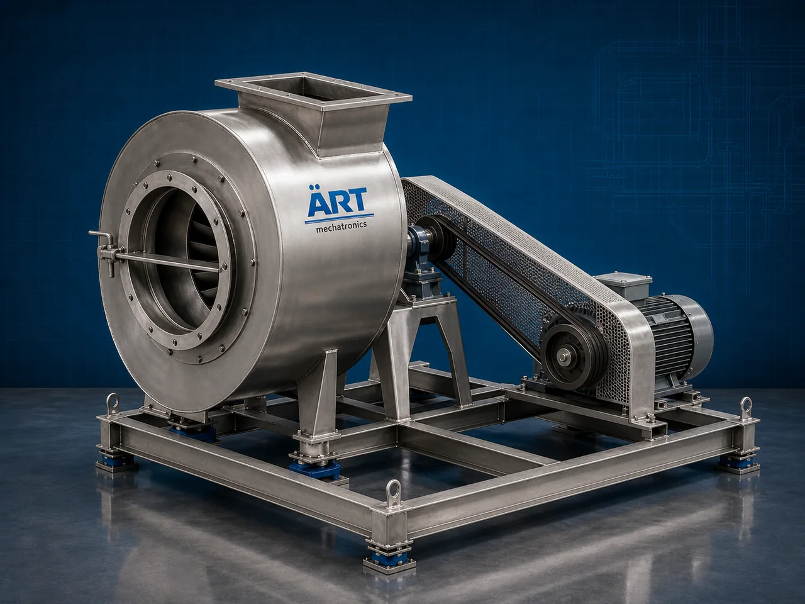

Industrial Blower Fan (Centrifugal, Axial & Industrial Air Blower System)
An Industrial Blower Fan, also known as an Industrial Air Blower, Centrifugal Blower, Axial Flow Fan, or Industrial Ventilation System, is an advanced industrial air movement solution designed for ventilation, cooling, air circulation, combustion air supply, dust extraction, drying, pneumatic conveying, exhaust handling, and process airflow management operations across food processing, HVAC, chemical, pharmaceutical, cement, steel, packaging, biomass, and industrial manufacturing industries.

About the Blower Fan
Industrial blower systems are widely used for:
- Industrial ventilation operations
- Dust collection and extraction
- Combustion air supply systems
- Cooling and drying applications
- Air circulation and exhaust handling
- Pneumatic conveying systems
- Process airflow management
- Industrial environmental control
The machine improves:
- Airflow efficiency
- Process cooling performance
- Ventilation quality
- Dust control efficiency
- Industrial productivity
- Equipment performance
- Energy-efficient air management
Industrial blower fans use:
- High-efficiency impellers and blades
- Dynamic airflow engineering
- Heavy-duty motor drive systems
- PLC and VFD automation controls
- Rugged industrial steel construction
to generate high-pressure or high-volume airflow for continuous industrial air handling operations with superior efficiency and reliable long-term performance.
Industrial blower fans are widely used in industries such as:
Food processing industries HVAC industries Chemical industries Pharmaceutical industries Cement industries Steel industries Biomass industries Industrial manufacturing industries
where ventilation, process airflow, dust extraction, and cooling operations are essential.
The machine is highly suitable for:
- Industrial air circulation systems
- Dust collection operations
- Combustion air supply
- Drying and cooling applications
- Pneumatic conveying systems
- Industrial ventilation and exhaust systems
ART Mechatronics offers high-performance industrial blower fans, engineered for continuous industrial operation, energy-efficient airflow generation, rugged construction, and reliable long-term industrial productivity.
Working Principle of Industrial Blower Fan
- 1. Air Intake & Flow Generation Process Ambient air enters blower inlet through suction chamber or ducting system.
- 2. Air Compression & High-Speed Flow Process Machine uses rotating impellers or blades driven by heavy-duty motors to accelerate and direct airflow at high pressure or high volume.
Advanced aerodynamic design ensures efficient airflow generation and low energy consumption.
- 3. Air Handling & Ventilation Operation Machine handles: ✔ Ventilation airflow ✔ Dust extraction ✔ Combustion air supply ✔ Process cooling ✔ Drying airflow ✔ Exhaust handling ✔ Pneumatic conveying ✔ Industrial air circulation
accurately and continuously.
- 4. Air Distribution & Pressure Management Process Machine performs: Air circulation Cooling airflow Exhaust ventilation Dust collection Combustion support Industrial air movement
for efficient industrial airflow and environmental management operations.
- 5. Intelligent Automation & Energy Management Integration Optional systems include: Variable frequency drives (VFD) Noise reduction systems Dust filtration systems Remote monitoring systems Automatic airflow control systems
- 6. Continuous Airflow Discharge Processed airflow discharged automatically for: Industrial duct systems Dust collectors Drying chambers Cooling tunnels Industrial ventilation systems
Types of Industrial Blower Fans
- 1. Centrifugal Blower Fan Designed for: ✔ High-pressure industrial airflow applications
- 2. Axial Flow Fan Suitable for: ✔ High-volume ventilation and cooling systems
- 3. Forced Draft Fan (FD Fan) Uses: ✔ Boiler combustion and furnace air supply systems
- 4. Induced Draft Fan (ID Fan) Designed for: ✔ Industrial exhaust and flue gas handling operations
- 5. High Pressure Air Blower Suitable for: ✔ Pneumatic conveying and industrial process airflow systems
- 6. Fully Automatic Industrial Blower System Designed for: ✔ Complete industrial ventilation and airflow automation systems
Industries Using Industrial Blower Fans
🍅 Food Processing Industry Drying, cooling, ventilation, and dust extraction systems. 🏭 HVAC Industry Air circulation, ventilation, and centralized air handling systems. ⚗️ Chemical Industry Process airflow and industrial exhaust handling systems. 💊 Pharmaceutical Industry Cleanroom ventilation and dust-free environmental systems. ⚙️ Cement & Steel Industry Furnace combustion air supply and industrial exhaust systems. 🌾 Biomass & Agro Industry Drying systems, combustion airflow, and dust handling operations.
Features & Advantages
- High-efficiency industrial airflow operation
- Energy-efficient blower and fan technology
- Heavy-duty industrial construction
- PLC and VFD automation control systems
- Improves ventilation and process airflow consistency
- Reduces dust accumulation and overheating
- Supports multiple industrial airflow applications
- Reliable long-term industrial performance
- Smooth integration with industrial ducting systems
Technical Highlights
Machine Type: Industrial blower fan Industrial air blower system Ventilation and cooling fan Application Compatibility: Dust collection systems Drying plants HVAC systems Boiler combustion systems Industrial ventilation lines Cooling tunnels Integration: Impeller and fan blade systems Heavy-duty motor drives Industrial ducting systems Airflow monitoring systems Features: PLC control system VFD speed controls Heavy-duty steel construction Noise reduction systems Remote monitoring systems Applications: Industrial ventilation Dust extraction Cooling airflow Combustion air supply Pneumatic conveying Process air circulation Automation: Semi-automatic Fully automatic industrial systems
Turnkey Industrial Airflow Solutions
ART Mechatronics offers: Complete industrial blower and ventilation systems Automatic airflow and dust extraction solutions Industrial cooling and combustion air systems Ducting and automation integration systems Installation & commissioning After-sales service & AMC
Why Choose Art Mechatronics
Expertise in industrial airflow and automation systems Customized blower solutions for multiple industries High-performance and energy-efficient airflow technology Advanced PLC and VFD automation systems Proven industrial ventilation performance across sectors
Applications
Food Processing Plants HVAC & Ventilation Facilities Chemical Manufacturing Industries Pharmaceutical Plants Cement & Steel Processing Units Industrial Manufacturing Facilities
Related Process Equipment machines
Get pricing & specs for the Blower Fan
Share the product, target capacity, current process and plant location. These details help our engineers discuss the right machine or line configuration.
One partner, from design to start-up
ART Mechatronics designs, manufactures, installs and commissions your Blower Fan solution with regional presence in India, UAE and Thailand.